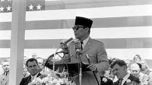

Berikut merupakan foto dalam era demokrasi parlementer (1949-1959).

Berikut merupakan kabinet pertama dalam masa demokrasi parlementer (kabinet natsir)

Berikut merupakan presiden yang memimpin Indonesia pada masa demokrasi terpimpin. (Ir. Soekarno)
Foto tersebut merupakan semua korban kejadian Gerakan 30 September.
Foto diatas merupakan foto demokrasi pancasila.
Foto diatas merupakan presiden- presiden pada masa reformasi.